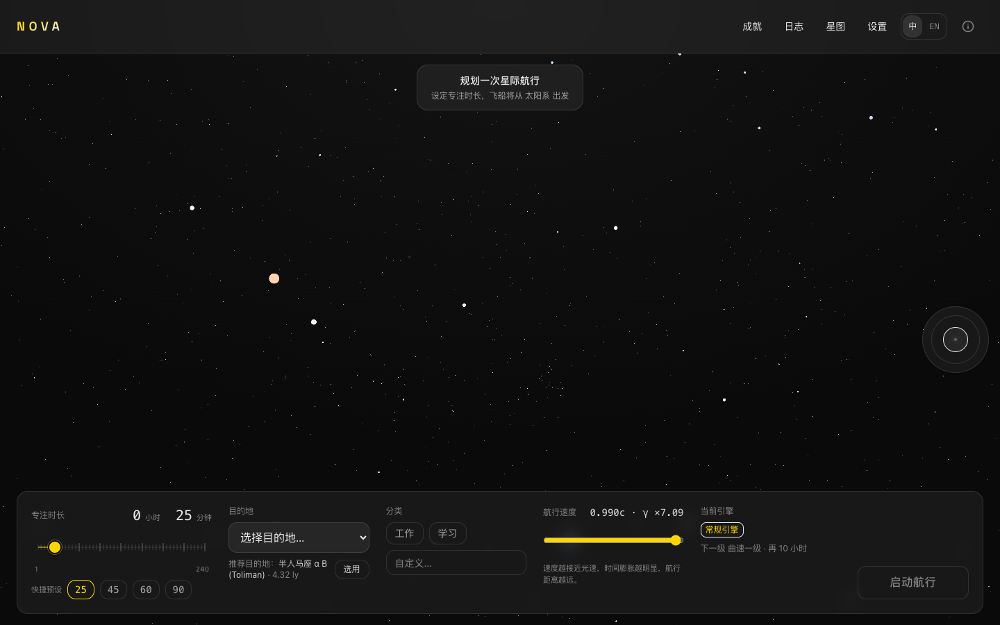

真实星图
17,789 颗真实恒星与 34 个著名星云。目的地是比邻星、天狼星、织女星，不是抽象的数字。

为什么是 Nova
不是又一个计时器。Nova 用真实的宇宙结构，让每一次专注都有方向、有距离、有回响。
17,789 颗真实恒星与 34 个著名星云。目的地是比邻星、天狼星、织女星，不是抽象的数字。
速度越接近光速，时间流逝越慢。你的专注分钟 × γ（洛伦兹因子），就是宇宙中真正经过的时间。
Web Audio 实时合成的引擎嗡鸣与宇宙微波背景音。15 项成就，解锁更强的曲速引擎，一路开向深空。
专注热力图、周月柱状图、连续天数与累计光年。每一次航程都被记录，导出成你的旅行日志。
立即开始
免费 · 开源 · 本地运行。选择你的平台，或直接在浏览器里使用网页版。
最新版本 …通过 GitHub Actions 为 tag 自动构建。可在 GitHub Releases 查看全部安装包。
关于
Nova 把一个简单的想法做到极致：专注计时不该是单调的倒计时，而是一次有方向的旅行。它使用真实的恒星数据、真实的相对论公式，把「我专注了 25 分钟」变成「我飞向了半人马座 α」。数据全部保存在本地，免费、开源、无需账户。项目地址： github.com/JasonSun2009CN/Nova。